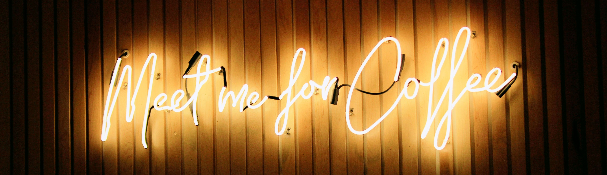

Notre Concept
I love coffee. What do you do? You know, I just relax, sit around, maybe have a cigarette. Cigarettes and coffee I think go together good. You think you drink too much of it? No. Coffee is good for health. I like to drink before I go to sleep. I drink a lot of coffee before I go to sleep so I can dream faster. I can dream like when they put a camera on the Indy 500... when they put a camera in the car, and it's just whipping by like that. Dream after dream after dream after dream. People ask me the next day, "What did you dream about?" I say, "I don't have time. I don't have time to tell you this."
- Coffee. They should freeze it, you know?
- Yes.
Fill an ice-cube tray with coffee and put sticks in it, for kids. So they can start when they're kids, when they're playing and stuff. Like a Popsicle. A caffeine Popsicle.
Coffee and Cigarettes de Jim Jarmusch.